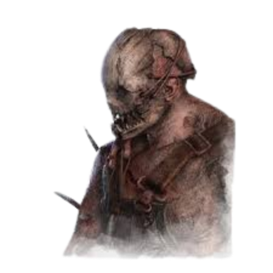
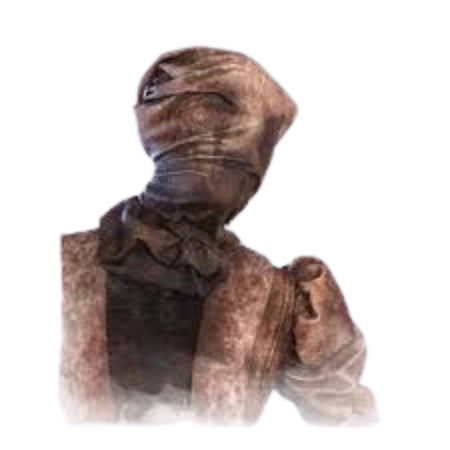
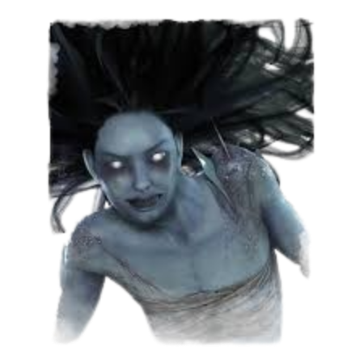
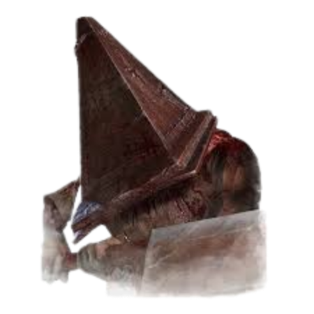
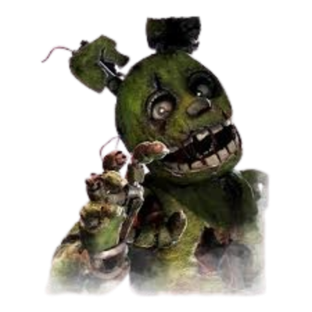
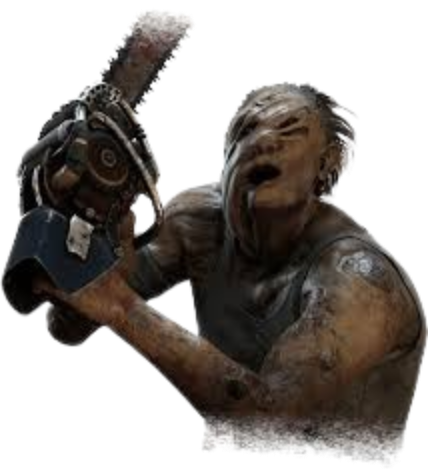

he carries and places bear traps accross the map.
They're very situational and depend on the map along with taking an insane
amount of skill. However with the right add-ons and map, he can be
quite powerful in terms of map control.

This comes at the cost of being the slowest killer and being unable to see
how far forward she will teleport. All these drawbacks give her one of the highest skill ceilings in the game
However, once learning and mastering her blink ability
she is vitually unstoppable.

Spirit has the ability to enter a "phase walk" state. This state allows her to traverse
the map unseen at the cost of her ability to see the survivors.
Spirit relies on sutble movements of the environment and sense of hearing to sneak
up on her victims undetcted.
(Pyramid Head)

"Rites of Judgement". This power gives him the ability to use his sword to rip into the
gound as he walks, leaving behind a trail on barbed wire. If a survivor wanders through any of the wire
they become "damned" and are signalled by a heartbeat to PHead, this heartbeat is called "Killer Instinct"
A damned survivor is capable of being sent to a "Cage of Attonement" instantaneously rather than carrying the
survivor to a hook. If a damned survivor has already been brought to the second hook stage previously, PHead
can quickly kill them by his own hand. PHead is also able to use his power to create a
mid-ranged linear attack from the ground that passes through walls called "Punishment of the Damned".
(Springtrap)

He can travel door to door and once exitting from the door he travels to, he becomes undetectable,
allowing him to sneak up on his victims. The survivors are also able to use these
doors, either to reveal Springtrap for a certain period of time with the use of the
cameras or travel through the doors themselves. However if Springtrap is also travelling through
the door with them, he catches them and exits the door carrying the survivor he finds.
He weilds a fire axe as his power which he can throw at survivors, leaving the axe in the survivors shoulder until they
remove it themself or Springtrap recalls the axe back to him. Once in a certain range, Springtrap
can grab the axe from the survivor himself and pick the survivor up that way.

instantly down a survivor no matter their health state.